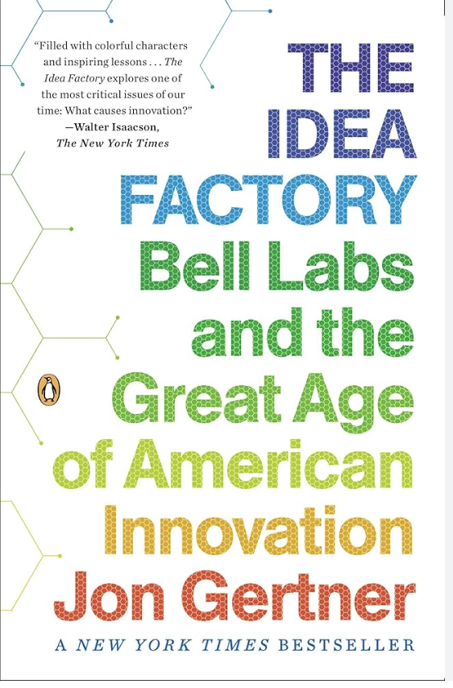
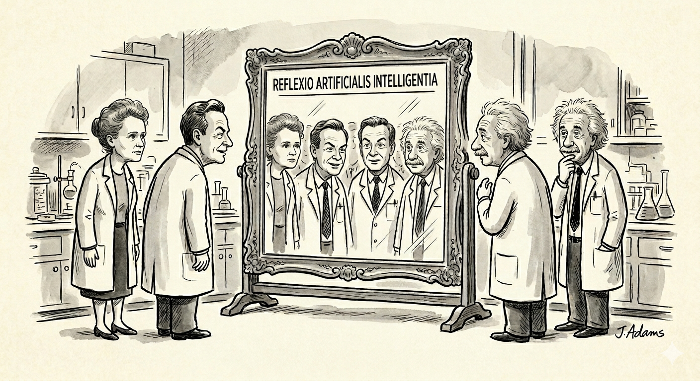

What I want you to take away.
Four short paragraphs and one ask.
The 16th century version of university is to combine multiple subjects together — pursuing knowledge for its own sake, branches of a single tree of universal truth. The modern version of a university is built on specialization — to push the frontiers of knowledge even further. The latter has produced extraordinary things in the field of research. For non-research work however, I would argue that breath matters much more than depth.
I prioritize how to think, rather than just what to think. My natural aptitude in sales, risk taking and willingness to operate under uncertainty have proven to be useful across multiple domains. But for my next job, I really want to work with the smartest, ambitious, intense, intellectual builders I could find.
NeurIPS was a turning point. As a complete outsider, it was the first time I felt like I’d found my Karass — in the Vonnegut sense. I gave out copies of my GEB booklet to everyone who I think is cool. I was truly impressed by Sammy’s enthusiasm and Chris’ energy. I became curious and watched your podcast appearances. I am impressed by Misha’s rigorous communication style.
I have a lot to learn. My biggest strength (and weakness) are impatience and enthusiasm. I’d love to talk about how I can contribute to your team.


If chapter 03 was the most important, this is the second.
You can reply to tsoerianto@ucsd.edu, or skip ahead to the appendix in chapter 08 — references, prior writing, projects worth a look.